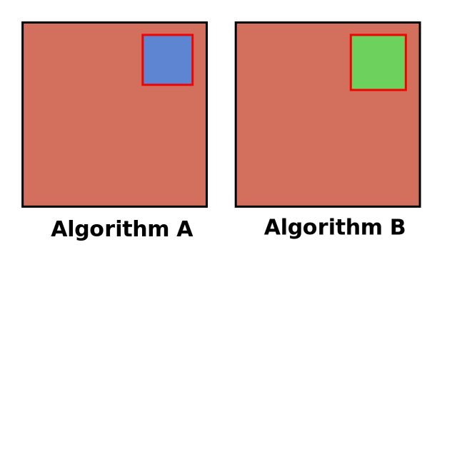

Querying Linked Data on the Web
is a multifaceted story
- Query languages and extensions
- Publication interfaces
- Querying algorithms
- ...
This variety of facets leads to comparability problems
Alternative algorithms are implemented in different engines → unfair!

Need for a flexible engine to compare alternative algorithms


- Highly modular meta query engine
- Flexible configuration system
Modularity using the actor model
Logic is separated into different actors.
Each actor independently performs a specific task.
- JSON-LD parsing actor
- SPARQL union actor A
- SPARQL union actor B
Implementation details
- Implemented in TypeScript/JavaScript
- 140 separate modules (actors, buses, mediators)
- Extensive unit and integration tests
Current features
-
SPARQL 1.1 support
Passes 89% of spec tests (WIP)
-
Federated querying of heterogeneous sources:
Any combination of sources
-
- Linked Data documents (Turtle, N-Triples, TriG, N-Quads, JSON-LD, RDFa)
- Triple Pattern Fragments
- SPARQL endpoints
- HDT files
- RDFJS Sources
Current usage of Comunica
-
Research
New querying algorithms and publishing interfaces
-
Solid
Authenticated querying across multiple data pods
-
Improved developer experience
Foundation for tools such as LDflex and GraphQL-LD
A modular framework
for querying Linked Data
on the Web.
Modules are wired together through semantic configuration files
Components.js: a semantic dependency injection framework.
Configuration files declare and parameterize actors, mediators and buses.
Implementation details
- Open-source under MIT license
- Implemented in TypeScript/JavaScript
- 140 separate modules (actors, buses, mediators)
- 2071 unit tests with a coverage of 100%
- 16 integration tests across different actors
- Continuous execution of the 268 SPARQL 1.1 Query spec tests
- Compatible with JavaScript API specification of RDFJS (W3C community group)
Comunica enables research
-
Different trade-offs between server and client effort
Triple Pattern Fragments and variants (versioning, Bloom filters, ...)
-
New query language features
SPARQL 1.2 community group
-
Link-Traversal-Based Query Processing
Live querying through Linked Data on the Web
Comunica enables Solid apps
-
Lightweight client-side Web apps
JavaScript runs directly in the browser
Small bundle sizes by cherry-picking modules
-
Querying private data
Solid-specific HTTP actor for enabling authenticated requests
-
Querying across multiple data pods
Enabled by ability to federate over heterogeneous sources
Comunica enables high-level abstractions
Developers don't like writing SPARQL queries → developer-friendly abstractions
-
LDflex
DSL for querying Linked Data through JavaScript expressions
Live playground
-
GraphQL-LD
Linked Data Querying with the highly popular GraphQL query language
Live playground